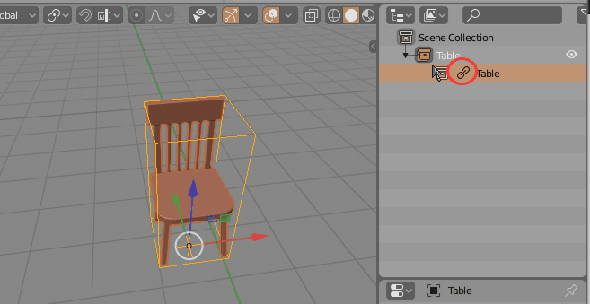

Editing Linked Libraries¶

You can edit linked library collections like any other collection with GroupPro. When you open linked library object, GroupPro will display popup informing you that you are going to open linked library group.
NOTE: bounding box color of edited linked library group will be different from color of normal group. This color can be customized in addon preferences -> Libraries Tab.
NOTE: You can disable open linked library popup in addon preferences -> Libraries Tab.
When you close linked group, changes will be uploaded to library file.